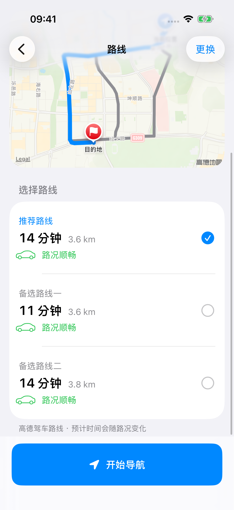
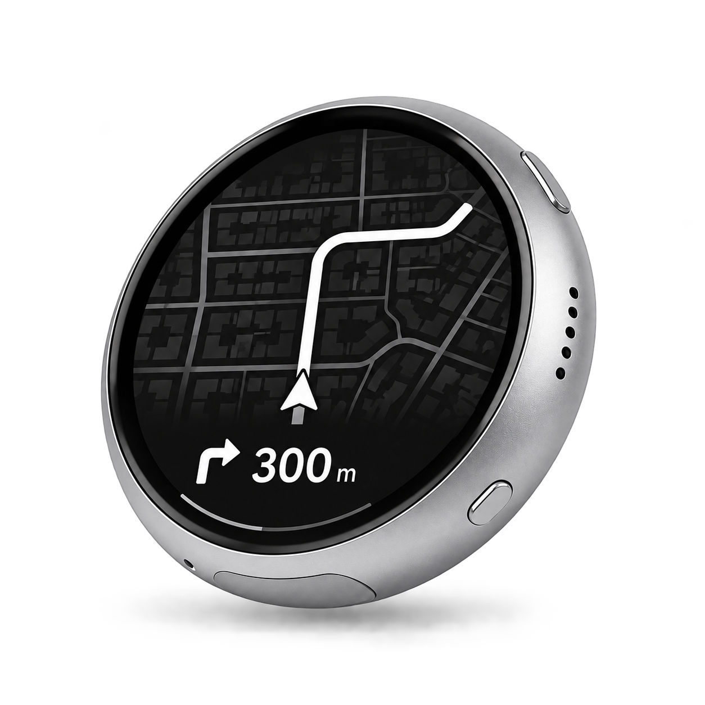
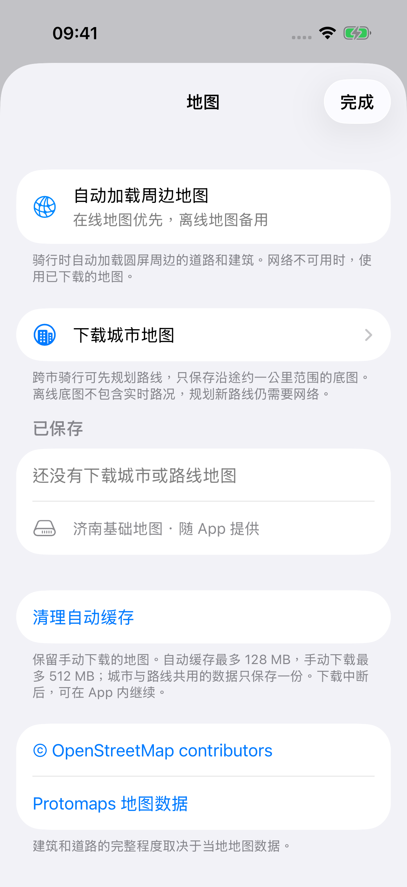

iPhone App
搜索、选路、管理设备。
最多对比三条候选路线。设备连接和地图下载也在这里，支持系统深色模式和大字体。

iPhone + 微雪圆屏
摩托车上的小圆屏导航。
在 iPhone 上选好路线，圆屏显示下一次转向、距离和周围道路。手机负责定位和规划，两者通过蓝牙连接。
项目开发中 · 源码与制作教程已公开

圆屏与 App
出发前在 App 里搜索目的地，对比路线的时间和距离。开始导航后，转向提示会同步到圆屏。
最多对比三条候选路线。设备连接和地图下载也在这里，支持系统深色模式和大字体。

导航、速度、行进航向和 Apple Music。点击下面的选项，看看屏幕里的变化。
使用流程
点击任意一步，查看圆屏对应的画面。
地图与下载
导航时会在线加载附近的道路与建筑。担心途中信号不好，可以提前保存需要的地图。
随当前位置加载周边底图，加载过的区域会留在缓存中。
搜索城市或区县，确认范围后下载。常去的地方可以一直留在手机里。
先选路线，再保存沿途约一公里范围的地图。下载可以暂停，也可以继续。
离线保存的是道路与建筑底图。地点搜索、新路线规划、偏航重算和实时路况仍需要网络；覆盖完整程度取决于当地地图数据。

自研主板
除了微雪版本，我们还设计了 B1 主板。定位和路线仍由手机提供，板上负责蓝牙、圆屏、触摸与电源，保留电池充电和方向传感器接口。
原理图和 PCB 已有工程候选，屏幕接口、电池参数和首板实测还没完成。现在先把微雪版本做好，自研板打样、外壳和安装结构暂缓推进。
开源 · GitHub
iPhone App、圆屏固件、服务器和 PCB 设计都在同一个仓库里。觉得这个项目有意思，欢迎点一个 Star 支持一下，也欢迎提 Issue 或一起开发。
mx3353672833-debug / moto-gps-waveshare
Q & A
目前还没有成品出售，也没有可直接安装的公开 App。源码和制作教程已经放在 GitHub，有兴趣可以按教程准备微雪硬件、安装 App 并配置网关，自己做一台。欢迎分享修改和制作经验，也欢迎一起解决遇到的问题。
可以从现有源码开始移植，目前还没有现成的 Android App。GitHub 上准备了开发指南和可直接复制给 AI 的提示词，从连接圆屏、接入导航到地图下载，最后说明怎么测试、发布 APK 和分享源码。
不需要。手机与圆屏通过蓝牙通信，手机自己用 Wi-Fi 或蜂窝网络获取在线服务。
不需要。周边地图默认在线获取；也可以进入“地图与离线下载”，搜索常用城市或区县并保存。跨市时先规划路线，再下载“这条路线周边”。范围太大时可选择较小区县。道路和建筑覆盖取决于当地数据。
下载包保存的是周边道路和建筑，方便断网时显示已有底图。地点搜索、规划新路线、偏航重算及实时路况仍需要网络。它目前不是完整的离线路线引擎。
回到地图页面，在未完成的下载包上选择继续，已有有效内容会复用。可以删除下载包或清理自动缓存。自动缓存和手动下载均有容量限制；多个区域共用的地图只保存一份。
不能保证。当前使用高德普通驾车路线，不能保证覆盖各地的摩托车禁限行规则。选择路线时需要结合当地规定与道路标志判断。
原生 App 使用后台定位和蓝牙支持已开始的导航；需要相应系统权限，长时间与复杂场景仍在验证。连接异常时，检查圆屏固件、电源与蓝牙权限，靠近手机并仅开启一台测试圆屏，再在设备页尝试重新连接。
当前优先支持 iPhone，尚无 Android App。音乐控制针对系统 Apple Music，支持上一首、播放／暂停和下一首，不是所有音乐 App 的通用遥控器。指南针当前以行进航向为主，停车绝对北向仍需后续传感器与标定验证。
联网搜索和路线请求会经项目服务交给高德；请求地图也会透露查看区域。服务器访问日志可能记录 IP、搜索词和位置参数。最近地点、配对记录和地图下载保存在手机；音乐信息通过蓝牙发往圆屏。App 的“隐私与数据”说明了这些用途与清理方式。
没有找到匹配的问题。换个关键词试试，或者在下面留言。
直接留言
使用中遇到的问题、改进建议，或者你自己做的版本，都可以聊。留言会通过邮件发给项目作者；想收到回复的话，记得留下邮箱。